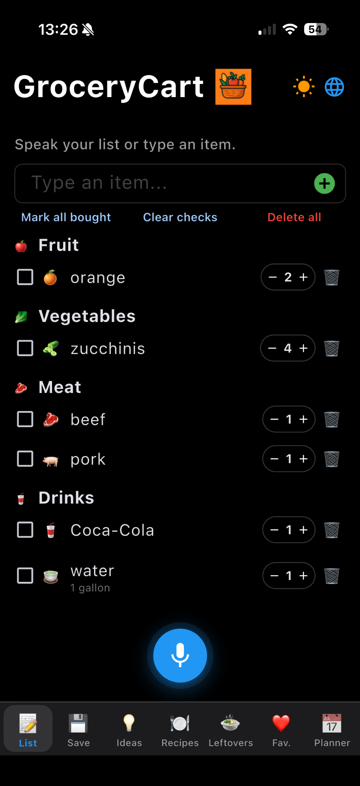
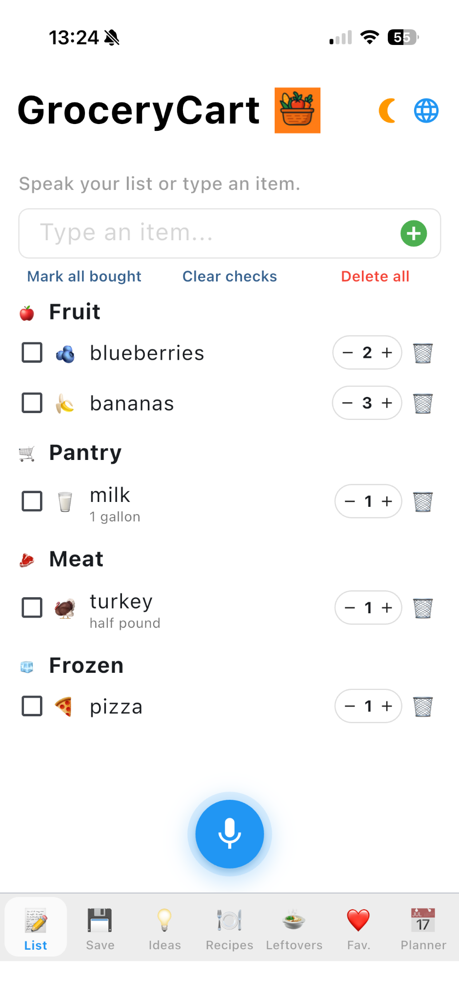
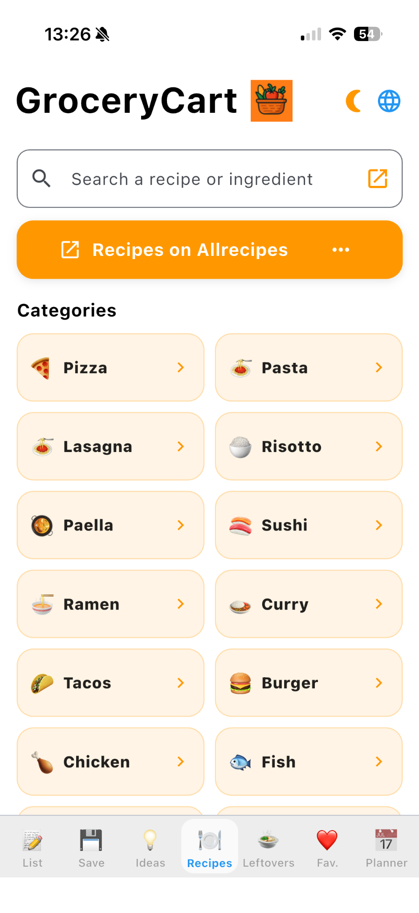
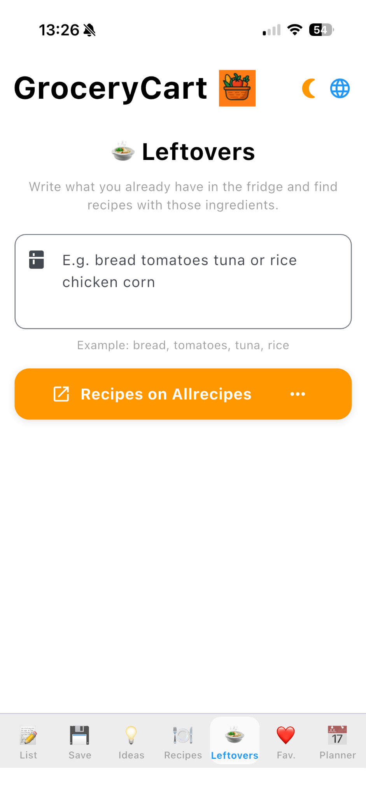
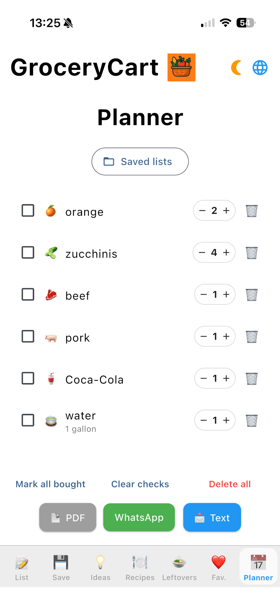

1. Voz primeiro
Toque no microfone e fale naturalmente. GroceryCart transforma suas palavras em itens.
Lista de compras por voz para iPhone
GroceryCart ajuda você a criar sua lista rapidamente. Fale naturalmente com o microfone ou digite manualmente quando quiser.
As capturas mostram o app em inglês como exemplo. No app, interface e itens são localizados no idioma selecionado.


Como funciona
Diga algo como “Preciso de quatro bananas e duas laranjas”. GroceryCart entende e transforma suas palavras em uma lista organizada.
Toque no microfone e fale naturalmente. GroceryCart transforma suas palavras em itens.
Prefere digitar? Adicione produtos manualmente pela barra de entrada.
Exporte em PDF, envie pelo WhatsApp, compartilhe por mensagem ou salve a lista.
Vantagens

Abra seus sites de receitas favoritos, leia ingredientes e adicione-os ao GroceryCart enquanto navega.
Digite ou dite o que você já tem na geladeira ou despensa — pão, tomates, atum ou arroz — e encontre ideias rapidamente.


Salve listas de compras para reutilizar quando quiser. Compartilhe por PDF, WhatsApp ou mensagem.
Capturas
As capturas mostram o app em inglês como exemplo. No app, interface e itens são localizados no idioma selecionado.
FAQ
Tudo o que você precisa saber sobre GroceryCart.
Sim. GroceryCart prioriza a voz, mas você também pode digitar manualmente.
Sim. Você pode consultar sites de receitas e adicionar ingredientes à lista.
Sim. Insira o que você já tem e GroceryCart ajuda a encontrar ideias.
Não. GroceryCart não exige conta para os principais recursos.
São exemplos. No app, interface e itens são localizados no idioma selecionado.
Grátis. Sem anúncios. Sem conta. Apenas uma lista de compras mais inteligente.